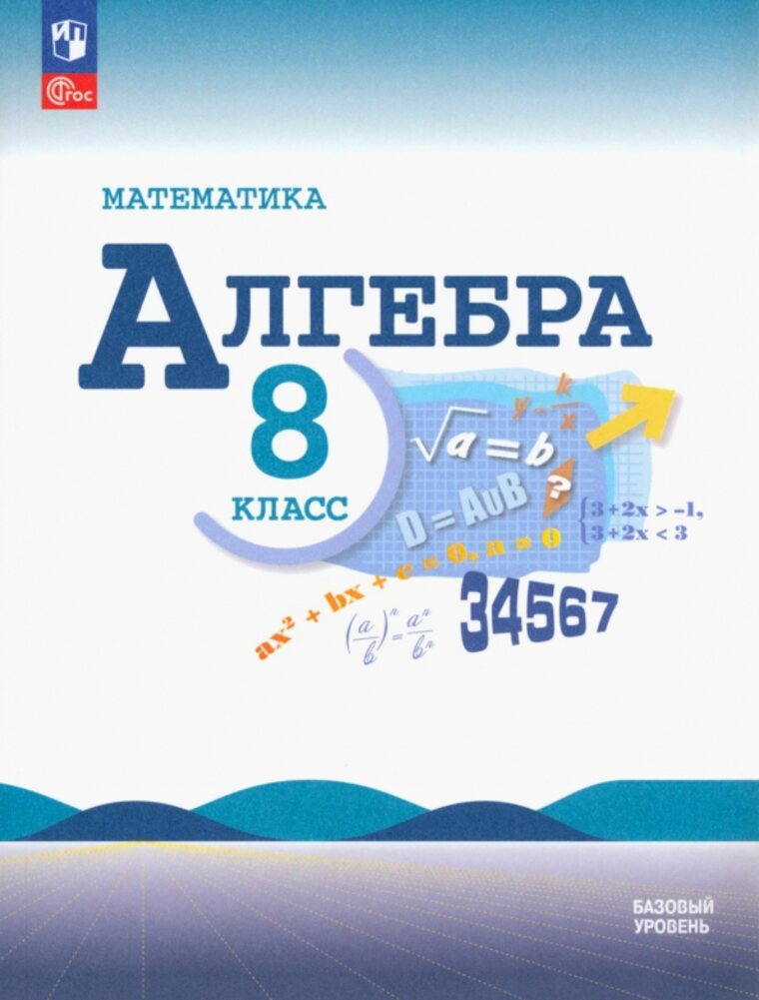

8 класс
›
Алгебра
Алгебра. 8 класс

Алгебра. 8 класс
Макарычев Ю. Н., Миндюк Н. Г., Нешков К. И. · Просвещение, 2026
Видеоуроки
Алгебра. 8 класс
Тренажёры и тесты
Проверить себя по темам
Контрольные работы
10 работ, 4 варианта, с ответами
ВПР и сборники
Варианты 2022—2026, PDF